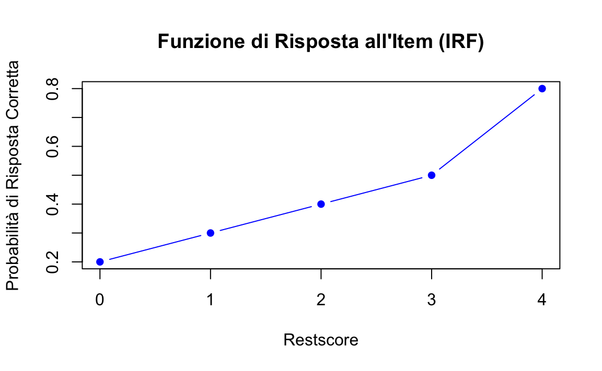

here::here("code", "_common.R") |>
source()
# Load packages
if (!requireNamespace("pacman")) install.packages("pacman")
pacman::p_load(mirt, mokken)65 Analisi della Scala di Mokken
Obiettivi del capitolo
In questo capitolo apprenderai:
- come la MSA rappresenti un approccio meno restrittivo rispetto allo scaling di Guttman e più flessibile rispetto ai modelli parametrici;
- come verificare empiricamente se i punteggi grezzi riflettono dati ordinali;
- come interpretare e utilizzare i coefficienti di scalabilità (\(H\), \(H_i\), \(H_{ij}\)) per valutare l’omogeneità monotona degli item;
- come comprendere e calcolare l’Ordinamento Invariante degli Item (IIO).
Prerequisiti
- Leggere An instructional module on Mokken scale analysis (Wind, 2017).
- Leggere Item-Explanatory Mokken Scale Analysis: Using Nonparametric Item Response Theory to Explore Item Attributes (Wind, 2024).
Preparazione del Notebook
65.1 Introduzione
L’Analisi delle Scale di Mokken (MSA), sviluppata dal ricercatore olandese Robert J. Mokken, è un metodo psicometrico utilizzato per verificare se un test misura in modo coerente un costrutto psicologico latente, come l’ansia o l’autostima. Si basa sulla Teoria Non Parametrica della Risposta agli Item (NIRT), una branca della psicometria che analizza le risposte delle persone agli item di un test per dedurre caratteristiche non direttamente osservabili, chiamate costrutti latenti.
Un costrutto latente, come l’ansia, non può essere osservato direttamente, ma viene stimato attraverso le risposte degli individui agli item di un test. L’idea principale è che queste risposte riflettano la posizione dell’individuo lungo un continuum (ad esempio, da “poco ansioso” a “molto ansioso”). Tuttavia, nella pratica, la relazione tra le risposte agli item e il costrutto latente può essere complessa e non seguire un andamento matematico preciso.
La MSA consente di verificare:
- Se gli item di un test sono coerenti tra loro e misurano lo stesso costrutto psicologico (concetto di omogeneità).
- Se è possibile ordinare sia le persone sia gli item lungo una scala, dalla persona con il punteggio più basso a quella con il punteggio più alto.
A differenza dei modelli parametrici della Teoria della Risposta agli Item (IRT), la MSA adotta un approccio non parametrico, che offre maggiore flessibilità. Non richiede di assumere una relazione matematica specifica (ad esempio, una curva logistica) tra il costrutto latente e le risposte agli item. Questa caratteristica rende la MSA particolarmente utile quando:
- i dati non soddisfano le ipotesi richieste dai modelli parametrici;
- si preferisce un’analisi più semplice e robusta, senza ricorrere a formule matematiche complesse.
La MSA amplia il modello di Guttman, basato sull’idea di perfetta cumulatività: una persona che risponde correttamente a un item più difficile dovrebbe rispondere correttamente anche a tutti gli item più semplici. Sebbene utile per creare scale gerarchiche, questo principio risulta spesso troppo rigido nella pratica, poiché non tiene conto delle variazioni naturali nei dati reali.
La MSA introduce un approccio probabilistico per affrontare queste complessità. Consente alcune deviazioni dalla perfetta cumulatività, rendendo il modello più realistico e adattabile a situazioni in cui le risposte ai test sono influenzate da fattori esterni, come la motivazione, la comprensione degli item o la stanchezza.
Una caratteristica distintiva della MSA è che la forma della relazione tra il livello del tratto latente (\(\theta\)) e la probabilità di rispondere correttamente a un item (nota come funzione di risposta all’item, IRF) non deve seguire una forma matematica specifica, come avviene nei modelli parametrici della Teoria della Risposta agli Item (IRT). Tuttavia, pur non imponendo vincoli rigidi alla forma delle IRF, la MSA introduce requisiti di ordinamento per item e rispondenti, che impongono alcune restrizioni sulle caratteristiche delle risposte agli item. Questi requisiti permettono di mantenere la coerenza nell’interpretazione del costrutto latente, pur lasciando spazio per variazioni nei dati reali.
65.2 Assunzioni dell’Analisi delle Scale di Mokken
Le principali assunzioni della MSA sono descritte di seguito.
65.2.1 Assunzione di Unidimensionalità
L’assunzione di unidimensionalità richiede che le risposte agli item siano governate da un unico tratto latente, ovvero che tutti gli item della scala misurino lo stesso costrutto psicologico. Questo tratto rappresenta una variabile sottostante non osservabile che determina le risposte ai singoli item. Nella pratica, progettare scale che misurano un unico tratto latente facilita l’interpretazione dei punteggi, riduce la complessità analitica e aumenta la validità delle conclusioni.
65.2.2 Assunzione di Indipendenza Locale
L’indipendenza locale è un concetto fondamentale nella MSA e nella IRT. In parole semplici, questa assunzione dice che, una volta noto il livello del tratto latente \(\theta\) (ad esempio, un’abilità o un tratto psicologico), le risposte di una persona ai diversi item di un test non devono influenzarsi a vicenda.
Immagina un test composto da più domande, tutte progettate per misurare lo stesso tratto latente \(\theta\), come la competenza matematica. L’indipendenza locale afferma che:
- le risposte alle singole domande dipendono solo dal livello di \(\theta\) della persona;
- le risposte a una domanda non sono condizionate da come la persona ha risposto alle altre domande.
In pratica, ogni domanda misura esclusivamente \(\theta\) senza essere influenzata dal contesto o da altre risposte.
Questa proprietà può essere descritta con una formula:
\[ P(X = x \mid \theta) = \prod_{i=1}^k P(X_i = x_i \mid \theta), \]
dove:
- \(P(X = x \mid \theta)\) è la probabilità che una persona risponda in un certo modo a tutte le domande, dato il suo livello di \(\theta\).
- \(P(X_i = x_i \mid \theta)\) è la probabilità di rispondere a una singola domanda \(i\), dato il livello di \(\theta\).
- \(\prod\) indica che moltiplichiamo insieme le probabilità per tutte le domande del test.
Questa formula mostra che, dato \(\theta\), le risposte sono indipendenti tra loro.
L’indipendenza locale ha due implicazioni fondamentali:
Le risposte non sono correlate (dato \(\theta\)):
Una volta noto il livello di \(\theta\), non esiste relazione tra le risposte a domande diverse. Se osserviamo delle correlazioni, sono dovute esclusivamente alla variabilità di \(\theta\).-
Le risposte riflettono solo \(\theta\):
Le risposte non devono essere influenzate da altri fattori, come:
- similarità tra i contenuti delle domande;
- effetti dell’ordine delle domande o stanchezza;
- indizi presenti in alcune domande che aiutano a rispondere ad altre.
Se questa assunzione viene violata, il test potrebbe non rappresentare accuratamente il tratto latente \(\theta\). Alcuni esempi comuni di violazione includono:
- Domande troppo simili possono creare correlazioni non legate a \(\theta\). Ad esempio, se due item riguardano frazioni e decimali, la conoscenza di uno potrebbe influenzare l’altro.
- Stanchezza, distrazione o l’ordine delle domande potrebbero modificare il modo in cui una persona risponde.
- Rispondere a una domanda potrebbe fornire informazioni utili per rispondere a un’altra.
L’indipendenza locale garantisce che il test misuri in modo accurato il tratto latente \(\theta\). Quando questa assunzione è rispettata, possiamo essere certi che le risposte riflettano solo \(\theta\) e non altri fattori esterni. Tuttavia, nella pratica, l’indipendenza locale può essere compromessa. Per questo motivo, è essenziale verificare che sia rispettata, così da assicurare la validità del modello psicometrico (sia in MSA che in IRT).
65.2.3 Assunzione di Monotonicità Latente
L’assunzione di monotonicità latente garantisce che, all’aumentare del tratto latente (\(\theta\)), la probabilità di rispondere correttamente a un item (per domande dicotomiche) o di scegliere una categoria di risposta più alta (per domande politomiche) aumenti o rimanga costante, senza mai diminuire.
Matematicamente, si esprime così:
\[ P_i(\theta_a) \leq P_i(\theta_b) \quad \text{se} \quad \theta_a \leq \theta_b , \]
dove:
- \(P_i(\theta)\) è la probabilità di rispondere correttamente o di scegliere una risposta più alta per l’item \(i\);
- \(\theta_a\) e \(\theta_b\) rappresentano due livelli del tratto latente.
In altre parole, questa proprietà assicura che individui con livelli più alti di \(\theta\) abbiano una probabilità maggiore o uguale di ottenere punteggi migliori rispetto a quelli con livelli più bassi. Ciò garantisce una relazione coerente tra il tratto latente e le risposte al test, rendendo la scala interpretabile e robusta.
65.2.3.1 Come verificare la monotonicità
Per valutare la monotonicità si analizza la relazione tra il tratto latente (o una sua stima) e la probabilità di rispondere correttamente a un item. Un approccio comune utilizza il restscore, che rappresenta il punteggio totale di un partecipante sulle risposte agli altri item del test, escludendo l’item che si sta analizzando. Il restscore fornisce una stima indiretta del livello del tratto latente.
65.2.3.2 Esempio di calcolo del restscore
Supponiamo che un test abbia 10 item e che un partecipante abbia risposto così:
| Item | 1 | 2 | 3 | 4 | 5 | 6 | 7 | 8 | 9 | 10 |
|---|---|---|---|---|---|---|---|---|---|---|
| Risposta | 1 | 1 | 0 | 1 | 0 | 1 | 1 | 1 | 0 | 1 |
Se vogliamo calcolare il restscore per l’item 10, sommiamo le risposte agli altri 9 item:
\[ \text{Restscore} = 1 + 1 + 0 + 1 + 0 + 1 + 1 + 1 + 0 = 6. \]
Il restscore indica la prestazione complessiva del partecipante senza considerare l’item analizzato.
65.2.3.3 Verifica della monotonicità con le Funzioni di Risposta agli Item (IRF)
Per confermare la monotonicità, si costruiscono le Funzioni di Risposta agli Item (IRF), che mostrano graficamente come varia la probabilità di rispondere correttamente a un item al crescere del restscore. Una funzione monotona è non decrescente, cioè la probabilità aumenta o rimane costante.
65.2.3.4 Esempio
Consideriamo un test con 5 item e i seguenti dati relativi all’item 5:
| Restscore | Frequenza Totale | Risposte Corrette | Probabilità Correttezza |
|---|---|---|---|
| 0 | 5 | 1 | \(1/5 = 0.20\) |
| 1 | 10 | 3 | \(3/10 = 0.30\) |
| 2 | 15 | 6 | \(6/15 = 0.40\) |
| 3 | 10 | 5 | \(5/10 = 0.50\) |
| 4 | 5 | 4 | \(4/5 = 0.80\) |
In questo caso, la probabilità di risposta corretta aumenta (0.20, 0.30, 0.40, 0.50, 0.80), confermando la monotonicità. Questa relazione può essere visualizzata graficamente:
restscore <- c(0, 1, 2, 3, 4)
prob_correct <- c(0.20, 0.30, 0.40, 0.50, 0.80)
# Grafico
plot(restscore, prob_correct,
type = "b", pch = 16, col = "blue",
xlab = "Restscore", ylab = "Probabilità di Risposta Corretta",
main = "Funzione di Risposta all'Item (IRF)"
)
Il grafico dovrebbe mostrare una curva crescente o piatta, segnalando che la monotonicità è rispettata.
65.2.3.5 Aggregazione dei restscore
Se il numero di partecipanti con un determinato restscore è troppo basso, le probabilità calcolate potrebbero essere instabili. In questi casi, è utile aggregare i restscore in gruppi.
Esempio:
| Gruppo Restscore | Frequenza Totale | Risposte Corrette | Probabilità Correttezza |
|---|---|---|---|
| 0-2 | 30 | 10 | \(10/30 = 0.33\) |
| 3-4 | 15 | 9 | \(9/15 = 0.60\) |
Questa aggregazione migliora l’affidabilità delle stime mantenendo il focus sulla relazione tra restscore e probabilità.
65.2.3.6 Monotonicità e coefficienti di scalabilità
Nella MSA, la monotonicità viene analizzata anche tramite i coefficienti di scalabilità (\(H_i\) per i singoli item e \(H_{ij}\) per le coppie di item). Questi coefficienti verificano se gli item rispettano le assunzioni del modello, come l’omogeneità e, indirettamente, la monotonicità.
Nella MSA esistono tre principali tipi di coefficienti di scalabilità:
-
\(H_i\): Coefficiente di scalabilità per un singolo item
Misura quanto un item specifico contribuisce alla scala totale. Indica se le risposte a un dato item sono coerenti con il costrutto latente misurato dalla scala.-
Interpretazione:
-
\(H_i > 0.30\): l’item è considerato accettabile.
-
\(H_i > 0.40\): l’item è considerato buono.
- \(H_i > 0.50\): l’item è considerato molto buono.
-
\(H_i > 0.30\): l’item è considerato accettabile.
-
Interpretazione:
\(H_{ij}\): Coefficiente di scalabilità per una coppia di item
Misura la relazione tra due item specifici in termini di coerenza con il costrutto latente. Questo coefficiente verifica se le risposte a una coppia di item mostrano una relazione coerente con il tratto latente misurato dalla scala.-
\(H\): Coefficiente di scalabilità per l’intera scala
È la media dei coefficienti di scalabilità di tutti gli item e misura quanto bene la scala complessiva rappresenta il costrutto latente.-
Interpretazione:
-
\(H > 0.30\): la scala è accettabile.
-
\(H > 0.40\): la scala è buona.
- \(H > 0.50\): la scala è molto buona.
-
\(H > 0.30\): la scala è accettabile.
-
Interpretazione:
65.2.3.7 Formula del coefficiente di scalabilità
Il coefficiente di scalabilità per un item \(i\) (\(H_i\)) è calcolato come:
\[ H_i = \frac{\sum_{j \neq i} \text{Cov}(X_i, X_j)}{\sum_{j \neq i} \text{Var}(X_i)}, \]
dove:
- \(\text{Cov}(X_i, X_j)\) è la covarianza tra le risposte agli item \(i\) e \(j\);
- \(\text{Var}(X_i)\) è la varianza delle risposte all’item \(i\);
- la sommatoria \(\sum_{j \neq i}\) indica che vengono considerati tutti gli item tranne \(i\).
In termini semplici, \(H_i\) misura quanto le risposte a un item sono correlate con le risposte agli altri item, rispetto alla variabilità interna dell’item stesso.
65.2.3.8 Relazione tra monotonicità e coefficienti di scalabilità
I coefficienti di scalabilità verificano l’omogeneità degli item (cioè, se misurano lo stesso costrutto latente), ma non garantiscono automaticamente la monotonicità. Ad esempio:
-
\(H_i > 0.30\) indica che un item contribuisce in modo rilevante alla scala, ma non assicura che la probabilità di rispondere correttamente all’item cresca monotonamente con il livello del tratto latente (\(\theta\)).
- Violazioni della monotonicità possono verificarsi anche in presenza di coefficienti di scalabilità elevati. Pertanto, è necessario analizzare le Funzioni di Risposta agli Item (IRF) per verificare che la probabilità di risposte corrette o di scelte superiori aumenti in modo non decrescente con il tratto latente.
65.2.3.9 Esempio pratico
Supponiamo di avere una scala con tre item (\(X_1\), \(X_2\), \(X_3\)) e i seguenti coefficienti di scalabilità calcolati:
| Item | \(H_i\) | Note |
|---|---|---|
| \(X_1\) | 0.45 | L’item contribuisce bene alla scala. |
| \(X_2\) | 0.32 | L’item è accettabile. |
| \(X_3\) | 0.28 | L’item potrebbe non essere adeguato. |
In questo caso:
-
\(X_1\) e \(X_2\) sono sufficientemente scalabili, mentre \(X_3\) potrebbe essere problematico.
- La monotonicità deve comunque essere verificata per ciascun item, anche per \(X_1\), che ha un valore elevato di \(H_i\).
In conclusione, i coefficienti di scalabilità sono strumenti essenziali per valutare la qualità degli item in una scala, misurando la loro capacità di rappresentare il costrutto latente. Tuttavia, non garantiscono che la monotonicità sia rispettata. Per costruire una scala psicometrica valida e robusta, è necessario combinare l’analisi dei coefficienti di scalabilità con la verifica delle Funzioni di Risposta agli Item (IRF).
65.2.4 Assunzione di Non-Intersezione delle Funzioni di Risposta
L’assunzione di non-intersezione delle funzioni di risposta (IRF) prevede che le probabilità di successo su item più difficili non superino mai quelle relative a item più facili, per ogni livello del tratto latente. In altre parole, le IRF devono essere ordinate in modo che la probabilità di rispondere correttamente a un item più difficile sia sempre inferiore o uguale rispetto a un item meno difficile. Formalmente, questa proprietà può essere espressa come:
\[ P_1(\theta) \leq P_2(\theta) \leq ... \leq P_k(\theta) \quad \text{per ogni} \ \theta . \]
L’intersezione delle IRF comporterebbe una violazione dell’ordinamento degli item, il che renderebbe difficile interpretare i risultati della scala.
In sintesi, l’Analisi delle Scale di Mokken si basa su assunzioni chiave simili a quelle dell’IRT, ma le implementa in un contesto non parametrico. La verifica di queste assunzioni garantisce la validità delle scale costruite e la corretta interpretazione dei risultati, rendendo l’MSA uno strumento potente per la costruzione di scale psicometriche robuste.
65.3 Modelli della Mokken Scale Analysis
Dalle suddette assunzioni derivano due modelli della MSA:
Modello di Monotonicità Omogenea (Mokken, 1971): rispetta le prime tre assunzioni (unidimensionalità, indipendenza locale e monotonicità latente). Questo modello permette di ordinare i rispondenti in base al tratto latente.
Modello di Doppia Monotonicità: rispetta tutte e quattro le assunzioni (unidimensionalità, indipendenza locale, monotonicità latente e non-intersezione). Consente di ordinare non solo i rispondenti, ma anche gli item in termini di difficoltà.
65.3.1 Errori Standard nei Coefficienti di Scalabilità
Gli errori standard (SE) sono essenziali per interpretare i coefficienti di scalabilità (\(H\), \(H_j\), \(H_{ij}\)) nell’Analisi delle Scale di Mokken (MSA). Forniscono una misura dell’incertezza associata alle stime e aiutano a valutare quanto il valore stimato rappresenti accuratamente il coefficiente reale nella popolazione.
65.3.1.1 Importanza degli Errori Standard
Un errore standard elevato rispetto al coefficiente stimato indica maggiore incertezza. Ad esempio, se \(H_j = 0.30\) e \(SE = 0.08\), il coefficiente stimato potrebbe essere inferiore alla soglia accettabile di 0.30 nella popolazione, sollevando dubbi sulla scalabilità dell’item.
Grazie agli errori standard, è possibile calcolare intervalli di confidenza (CI) per quantificare la precisione della stima. Per un livello di confidenza del 95%, la formula è:
\[ \text{95\% CI} = H_j \pm (1.96 \times SE), \]
dove:
- \(H_j\) è il coefficiente stimato.
- \(1.96\) è il valore critico associato al 95% di confidenza.
- \(SE\) è l’errore standard.
L’intervallo di confidenza descrive l’incertezza della stima e indica che, su un gran numero di campioni estratti dalla stessa popolazione, il 95% degli intervalli calcolati includerà il vero valore del coefficiente.
65.3.1.2 Esempio di Calcolo del CI
Supponiamo che un coefficiente di scalabilità abbia \(H_j = 0.30\) e un errore standard di \(SE = 0.10\). Il 95% CI è:
\[ \text{95\% CI} = 0.30 \pm (1.96 \times 0.10) = [0.10, 0.50]. \]
Questo intervallo mostra che, se ripetessimo il campionamento molte volte, il valore reale di \(H_j\) sarebbe compreso tra 0.10 e 0.50 nel 95% dei casi. Tuttavia, un intervallo così ampio riflette una stima relativamente incerta, e la possibilità che \(H_j\) sia sotto la soglia accettabile di 0.30 richiede ulteriori considerazioni.
65.3.2 Fattori che Influenzano l’Errore Standard
Diversi elementi influenzano la dimensione dell’errore standard, tra cui:
-
Dimensione del campione:
- Campioni più grandi riducono l’errore standard, migliorando la precisione delle stime.
- Nei campioni piccoli, l’incertezza è maggiore, rendendo difficile interpretare \(H_j\) con precisione.
- Campioni più grandi riducono l’errore standard, migliorando la precisione delle stime.
-
Distribuzione dei punteggi degli item:
- Distribuzioni sbilanciate (ad esempio, molte risposte estreme come tutto 0 o tutto 1) aumentano l’errore standard.
- Una distribuzione più uniforme dei punteggi garantisce una stima più stabile.
- Distribuzioni sbilanciate (ad esempio, molte risposte estreme come tutto 0 o tutto 1) aumentano l’errore standard.
-
Eterogeneità degli item:
- Se gli item non misurano lo stesso costrutto o presentano deviazioni significative dal modello, i coefficienti di scalabilità diventano meno affidabili e i SE aumentano.
65.3.3 Utilizzo Pratico degli Errori Standard
Gli errori standard offrono informazioni cruciali per decidere se un item contribuisce in modo adeguato alla scala. Se \(H_j\) è basso o il suo intervallo di confidenza include valori inferiori a 0.30, l’item potrebbe non essere idoneo.
65.3.3.1 Interpretazione del CI
Se il CI è interamente sopra 0.30:
L’item è probabilmente scalabile e contribuisce in modo adeguato alla scala.Se il CI include valori sotto 0.30:
C’è incertezza sulla scalabilità dell’item, e potrebbe essere necessaria una revisione.Se il CI è interamente sotto 0.30:
L’item non è scalabile e dovrebbe essere considerato per la rimozione, a meno che non misuri aspetti unici e rilevanti del costrutto.
65.3.4 Eliminazione degli Item con Bassi Coefficienti di Scalabilità
Mokken (1971) ha sottolineato che item con bassi coefficienti di scalabilità (\(H_j < 0.30\)) spesso introducono errori nel modello, riducendo la coerenza della scala. Tuttavia, rimuovere automaticamente questi item può avere conseguenze sia positive sia negative:
-
Pro:
- Migliora la coerenza interna della scala.
- Aumenta l’affidabilità psicometrica.
- Migliora la coerenza interna della scala.
-
Contro:
- Riduce la copertura del costrutto.
- Può eliminare aspetti teoricamente rilevanti del costrutto latente.
- Riduce la copertura del costrutto.
Per evitare problemi, la decisione di eliminare un item dovrebbe considerare non solo i coefficienti di scalabilità e i SE, ma anche la validità teorica dell’item.
In conclusione, gli errori standard nei coefficienti di scalabilità sono strumenti essenziali per valutare l’incertezza delle stime e la qualità degli item in una scala psicometrica. Attraverso l’analisi di \(SE\), CI e coefficienti di scalabilità, i ricercatori possono prendere decisioni più informate sulla costruzione e sulla revisione delle scale, bilanciando le esigenze psicometriche con quelle teoriche.
Esempio 65.1 Item con basso \(H_j\): se \(H_j = 0.20\) e il 95% CI è \([0.05, 0.35]\), il coefficiente è inferiore alla soglia accettabile di 0.30. Tuttavia, prima di eliminare l’item, si dovrebbe verificare se:
- l’item copre un aspetto importante del costrutto;
- la sua rimozione influisce sull’affidabilità della scala.
65.4 Estensione della MSA agli Item Politomici
La MSA, inizialmente sviluppata per item dicotomici (es. risposte “sì/no”), è stata ampliata da Molenaar (1982a, 1997) per includere item politomici, come quelli utilizzati nelle scale Likert. Questa estensione mantiene i principi di base della MSA ma li adatta per gestire la maggiore complessità degli item con più categorie di risposta.
Gli item politomici sono domande che offrono più di due opzioni di risposta ordinate, come una scala Likert a 5 punti (da “fortemente in disaccordo” a “fortemente d’accordo”). A differenza degli item dicotomici, gli item politomici introducono una struttura più articolata, dove le risposte non sono semplicemente giuste o sbagliate, ma riflettono livelli crescenti di accordo, preferenza o intensità.
Nel caso degli item politomici, la MSA non valuta solo l’item nel suo complesso, ma analizza anche i “passaggi” tra categorie di risposta consecutive. Questi passaggi rappresentano le transizioni da una categoria a quella successiva lungo la scala di risposta.
Ad esempio, in un item Likert a 5 punti (“fortemente in disaccordo”, “in disaccordo”, “neutrale”, “d’accordo”, “fortemente d’accordo”), ci sono 4 passaggi distinti:
- Da “fortemente in disaccordo” a “in disaccordo o superiore”.
- Da “in disaccordo” a “neutrale o superiore”.
- Da “neutrale” a “d’accordo o superiore”.
- Da “d’accordo” a “fortemente d’accordo”.
Ogni passaggio riflette una progressione lungo il continuum latente del tratto psicologico che si sta misurando.
65.4.1 Funzioni di Risposta del Passaggio dell’Item
Per analizzare i passaggi tra categorie, la MSA utilizza le Funzioni di Risposta del Passaggio dell’Item (Item Step Response Functions, ISRF). Le ISRF descrivono la probabilità che una persona con un certo livello di tratto latente (\(\theta\)) scelga una determinata categoria o una categoria superiore.
65.4.1.1 Caratteristiche delle ISRF:
Probabilità di transizione:
Le ISRF collegano la probabilità di scegliere una categoria (o una superiore) al livello di \(\theta\) dell’individuo. Ad esempio, per un partecipante con \(\theta\) medio-alto, la probabilità di passare a “d’accordo o superiore” dovrebbe essere maggiore rispetto a un partecipante con \(\theta\) basso.Contributo di ogni passaggio:
Ogni passaggio tra categorie viene analizzato separatamente, per verificare quanto contribuisce al progresso lungo il continuum latente. Questo permette di identificare eventuali problemi in specifiche transizioni.
65.4.1.2 Requisito di monotonicità per le ISRF
Le probabilità rappresentate dalle ISRF devono essere monotone crescenti. Ciò significa che, all’aumentare del livello di \(\theta\), la probabilità di scegliere una categoria più alta (o una superiore) deve aumentare o rimanere costante.
65.4.1.3 Esempio di Applicazione
Immaginiamo un item Likert a 5 punti in una scala che misura l’autostima. Per un individuo con un basso livello di autostima (\(\theta\) basso), le ISRF potrebbero mostrare una probabilità più alta di rimanere nelle categorie più basse (“fortemente in disaccordo”, “in disaccordo”). Al contrario, per un individuo con un alto livello di autostima (\(\theta\) alto), le ISRF indicherebbero una maggiore probabilità di scegliere categorie superiori (“d’accordo”, “fortemente d’accordo”).
65.4.1.4 Vantaggi dell’estensione agli item politomici
Maggiore flessibilità:
La MSA può essere applicata a una gamma più ampia di test psicologici, inclusi quelli con risposte più sfumate e dettagliate.Analisi dettagliata:
Esaminando i passaggi tra categorie, è possibile individuare problemi specifici in alcune transizioni (ad esempio, una mancanza di progressione coerente tra categorie adiacenti).Adattamento alle scale ordinarie:
Gli item politomici sono comuni nei test psicologici e sociali; questa estensione rende la MSA più applicabile ai dati reali.
In conclusione, l’estensione della MSA agli item politomici rappresenta un importante avanzamento nell’analisi delle scale psicometriche. Analizzando non solo gli item nel loro complesso ma anche i singoli passaggi tra categorie, la MSA offre una visione più dettagliata di come gli item riflettono il tratto latente. Tuttavia, è fondamentale verificare che le probabilità rappresentate dalle ISRF rispettino la monotonicità, per garantire la validità e l’affidabilità della scala.
65.4.2 Assunzioni Fondamentali per la MSA con Item Politomici
L’estensione della MSA agli item politomici mantiene i principi fondamentali del modello originariamente sviluppato per gli item dicotomici, adattandoli ai singoli passaggi tra categorie. Ecco le principali assunzioni:
-
Monotonicità delle ISRF:
- La probabilità di scegliere una categoria \(k\) o superiore deve aumentare o rimanere costante all’aumentare del tratto latente \(\theta\).
- Questo garantisce che le categorie siano ordinate in modo coerente e riflettano livelli crescenti di \(\theta\). Ad esempio, un individuo con un tratto latente più alto dovrebbe avere una maggiore probabilità di selezionare categorie superiori rispetto a chi ha un tratto latente più basso.
- La probabilità di scegliere una categoria \(k\) o superiore deve aumentare o rimanere costante all’aumentare del tratto latente \(\theta\).
-
Ordinamento coerente delle categorie:
- Ogni categoria di risposta deve rappresentare un livello progressivamente più alto del tratto latente.
- Ad esempio, il passaggio da “neutrale” a “d’accordo” dovrebbe indicare un incremento tangibile lungo il continuum di \(\theta\), garantendo che le categorie siano interpretabili e coerenti.
- Ogni categoria di risposta deve rappresentare un livello progressivamente più alto del tratto latente.
-
Validità del modello di omogeneità monotona:
- Come per gli item dicotomici, il modello presuppone che tutti gli item misurino lo stesso tratto latente in modo coerente e monotono.
- Questa coerenza implica che le risposte degli individui siano influenzate principalmente dal livello di \(\theta\), con minime interferenze da altri fattori.
- Come per gli item dicotomici, il modello presuppone che tutti gli item misurino lo stesso tratto latente in modo coerente e monotono.
65.4.3 Vantaggi dell’Analisi Politomica con la MSA
L’estensione della MSA agli item politomici offre strumenti utili per affrontare la complessità di scale con più categorie di risposta, come quelle basate su scale Likert. I principali vantaggi includono:
-
Maggiore precisione nella misurazione:
- La presenza di più categorie di risposta consente di catturare differenze più sottili tra i rispondenti rispetto agli item dicotomici.
- Questo è particolarmente utile per misurare tratti psicologici che variano su un continuum, come atteggiamenti, opinioni o livelli di motivazione. Le categorie multiple offrono un modo per rappresentare una gamma più ampia di livelli del tratto latente.
- La presenza di più categorie di risposta consente di catturare differenze più sottili tra i rispondenti rispetto agli item dicotomici.
-
Valutazione approfondita delle transizioni tra categorie:
- La MSA politomica analizza le transizioni tra categorie consecutive (passaggi), permettendo di verificare se ciascun passaggio è coerente con un progresso lungo il tratto latente.
- Questa analisi consente di identificare problemi come:
- Categorie che non rappresentano un aumento coerente del tratto latente.
- Passaggi con probabilità di transizione non monotone, che potrebbero indicare una cattiva formulazione dell’item o una scarsa capacità discriminativa.
- Categorie che non rappresentano un aumento coerente del tratto latente.
- La MSA politomica analizza le transizioni tra categorie consecutive (passaggi), permettendo di verificare se ciascun passaggio è coerente con un progresso lungo il tratto latente.
-
Applicabilità a scale con risposte articolate:
- La MSA per item politomici è particolarmente adatta per scale frequentemente utilizzate in ambiti psicologici, educativi e sociali, dove le risposte graduali (ad esempio, “in disaccordo” a “d’accordo”) sono comuni.
- Questo approccio consente di valutare con precisione la coerenza delle categorie di risposta rispetto al tratto latente e di identificare eventuali categorie ridondanti o poco utili.
- La MSA per item politomici è particolarmente adatta per scale frequentemente utilizzate in ambiti psicologici, educativi e sociali, dove le risposte graduali (ad esempio, “in disaccordo” a “d’accordo”) sono comuni.
65.4.4 Implicazioni per la costruzione di scale
L’analisi politomica con la MSA non si limita a verificare se gli item misurano un tratto latente, ma permette anche di ottimizzare la struttura della scala. Attraverso l’analisi dei passaggi, è possibile:
-
Garantire che ogni categoria rappresenti un livello del tratto latente:
- Ogni passaggio deve riflettere un progresso chiaro lungo il continuum latente, senza sovrapposizioni tra categorie.
-
Individuare anomalie nelle categorie:
- Categorie che non seguono un ordine coerente possono essere riformulate o combinate con altre per migliorare la qualità della scala.
-
Valutare l’utilità di ciascun passaggio:
- Se un passaggio tra categorie ha una bassa capacità discriminativa o non rispecchia adeguatamente il progresso lungo \(\theta\), potrebbe essere necessario modificarlo o eliminarlo.
In conclusione, l’estensione della MSA agli item politomici offre strumenti analitici per verificare la coerenza e l’utilità delle categorie di risposta. Attraverso l’analisi dei passaggi tra categorie, si può ottenere una misurazione più dettagliata e precisa dei tratti latenti, migliorando la capacità delle scale di rappresentare accuratamente il costrutto d’interesse. Questo approccio è particolarmente rilevante in ambiti in cui le risposte articolate sono indispensabili per catturare la complessità dei fenomeni misurati.
65.5 Mokken Reliability Coefficient
L’affidabilità di un test psicometrico si riferisce alla sua capacità di fornire risultati coerenti nel tempo o attraverso somministrazioni ripetute. Sebbene l’alfa di Cronbach sia l’indicatore di affidabilità più diffuso, presenta alcune limitazioni, soprattutto quando gli item non sono omogenei o quando si lavora con scale ordinali. In questi casi, il coefficiente \(\rho\) di Mokken (Mokken reliability coefficient o \(\rho_M\)) rappresenta un’alternativa valida, basandosi su assunzioni meno restrittive e adattandosi meglio ai dati ordinali.
Il coefficiente \(\rho\) di Mokken è una misura di consistenza interna che deriva dalla teoria della scala non parametrica di Mokken, utilizzata principalmente per dati ordinali. A differenza dell’alfa di Cronbach, \(\rho\) non richiede che gli item soddisfino rigorosi criteri di omogeneità o equivalenza, rendendolo particolarmente utile in contesti in cui i dati non rispettano pienamente i presupposti della teoria classica dei test (CTT).
Il coefficiente \(\rho\) di Mokken misura il rapporto tra la varianza spiegata dal punteggio totale (\(S^2_T\)) e la varianza totale osservata. La formula è la seguente:
\[ \rho = 1 - \frac{\sum_{i=1}^k S^2_i}{S^2_T}, \]
dove:
- \(k\): numero di item del test,
- \(S^2_i\): varianza di ciascun item,
- \(S^2_T\): varianza totale del punteggio del test (somma dei punteggi degli item).
Interpretazione di \(\rho\):
-
\(\rho\) varia tra 0 e 1.
- valori vicini a 1 indicano maggiore affidabilità.
-
\(\rho > 0.70\): accettabile per la ricerca esplorativa.
- \(\rho > 0.80\): preferibile per applicazioni pratiche.
-
\(\rho > 0.70\): accettabile per la ricerca esplorativa.
Vantaggi di \(\rho\) di Mokken:
- a differenza dell’alfa di Cronbach, che assume una scala intervallare, \(\rho\) può essere utilizzato con dati ordinali come le scale Likert.
- non richiede che tutti gli item abbiano correlazioni simili (omogeneità), né che riflettano lo stesso grado di relazione con la variabile latente.
- può essere applicato a test che non rispettano i presupposti della teoria classica dei test o di modelli parametrici più rigidi.
Limitazioni di \(\rho\) di Mokken:
- se gli item non rispettano l’assunzione di monotonicità, l’interpretazione del coefficiente può risultare ambigua.
- il coefficiente è appropriato per scale unidimensionali; in presenza di più dimensioni, è necessario analizzare ogni sottoscala separatamente.
In conclusione, il coefficiente \(\rho\) di Mokken valuta l’affidabilità di scale ordinali, offrendo un’alternativa all’alfa di Cronbach quando le assunzioni della teoria classica dei test non sono soddisfatte. Tuttavia, è essenziale verificare la monotonicità degli item e considerare la dimensionalità della scala per un’interpretazione accurata.
65.5.1 Procedura di Selezione Automatica degli Item
La Procedura di Selezione Automatica degli Item (AISP) è una metodologia impiegata nella MSA per selezionare insiemi di item che rispettino le assunzioni del Modello di Mokken (MHM). A differenza di tecniche più comuni come l’analisi fattoriale o l’analisi parallela, l’AISP non determina esplicitamente la dimensionalità dei dati. Piuttosto, si basa sui coefficienti di scalabilità per identificare gruppi di item che misurano lo stesso costrutto latente, formando così una o più scale.
65.5.1.1 Come Funziona l’AISP
L’AISP segue un approccio iterativo che:
- Seleziona l’item iniziale, valutato come più rappresentativo di una dimensione, utilizzando il coefficiente di scalabilità individuale (\(H_i\)).
- Successivamente, analizza le coppie di item (\(H_{ij}\)) per identificare un insieme scalabile di item che misurano lo stesso costrutto.
Un item viene incluso in una scala se:
- Il suo coefficiente di scalabilità individuale (\(H_i\)) supera una soglia predefinita (\(c\), solitamente pari a 0.30);
- La covarianza tra ogni coppia di item (\(H_{ij}\)) è positiva e superiore alla stessa soglia.
Se un item non soddisfa questi criteri, la procedura tenta di assegnarlo a una nuova scala. Questo processo iterativo continua finché tutti gli item non sono stati assegnati a una scala o esclusi come non scalabili.
65.5.1.2 Soglia (\(c\)) e Implicazioni
La scelta della soglia \(c\) è cruciale:
- Valore alto di \(c\): Maggiore precisione nella selezione degli item, ma rischio di escluderne troppi, riducendo la lunghezza della scala e la copertura del costrutto.
- Valore basso di \(c\): Aumenta il numero di item inclusi, ma rischia di compromettere la coerenza e la validità della scala.
Un valore comunemente utilizzato è \(c = 0.30\), che rappresenta un buon equilibrio tra inclusività e rigore. Tuttavia, il valore ottimale dipende dagli obiettivi dello studio e dalla natura dei dati.
65.5.1.3 Limitazioni dell’AISP
- Relazioni tra dimensioni: L’AISP può risultare meno efficace in presenza di dimensioni fortemente correlate o di item che saturano su più dimensioni, poiché non distingue esplicitamente tali situazioni.
- Dipendenza dai dati statistici: L’AISP si basa esclusivamente sui coefficienti di scalabilità e non considera le relazioni teoriche tra gli item. Questo può portare all’inclusione di item con scarso valore teorico o alla loro esclusione inappropriata.
- Unidimensionalità richiesta: Gli item selezionati da una scala devono riflettere un unico costrutto. In caso di multidimensionalità, occorre considerare scale separate.
In conclusione, l’AISP offre un’alternativa flessibile all’analisi fattoriale per la costruzione di scale psicometriche, particolarmente utile quando si lavora con dati ordinali. Sebbene non forzi soluzioni e tenga conto della scalabilità degli item, è fondamentale integrarla con considerazioni teoriche per garantire che le scale siano valide e utili nel contesto di applicazione.
65.6 Ordinamento Invariante degli Item (IIO)
L’Ordinamento Invariante degli Item (Invariant Item Ordering, IIO) è un concetto fondamentale nella MSA. Garantisce che l’ordine di difficoltà degli item rimanga costante per tutti i partecipanti, indipendentemente dal loro livello sul costrutto latente misurato (ad esempio, ansia o autostima).
In pratica, l’IIO richiede che:
Gli item abbiano sempre lo stesso ordine di difficoltà:
Un item considerato “più difficile” deve essere percepito come tale da tutti i partecipanti, indipendentemente dal loro livello del tratto latente.
Ad esempio, in un test di matematica, un problema complesso deve risultare più difficile di uno semplice per tutti gli studenti, sia quelli più abili sia quelli meno abili.I punteggi totali siano interpretabili:
Se un partecipante ha un punteggio totale più alto, deve avere una probabilità maggiore di rispondere positivamente (o correttamente) a ogni item rispetto a un partecipante con un punteggio più basso.
L’IIO garantisce che le differenze nei punteggi totali riflettano effettivamente differenze nel costrutto latente, senza essere influenzate da variabili estranee come età, genere o interpretazioni diverse degli item.
65.6.1 Perché l’IIO è Importante?
Uniformità nella misurazione:
L’IIO assicura che gli item misurino lo stesso tratto latente per tutti i partecipanti.
Ad esempio, in una scala di depressione, un punteggio totale più alto deve indicare una maggiore gravità del disturbo, con una progressione coerente dagli item più “facili” (come stanchezza) ai più “difficili” (come pensieri suicidari).Validità dei punteggi:
Se l’ordine degli item cambia tra sottogruppi di partecipanti, i punteggi totali potrebbero non rappresentare correttamente il costrutto latente, invalidando i confronti tra gruppi.Identificazione di bias:
La verifica dell’IIO aiuta a individuare problemi come la Funzione Differenziale degli Item (Differential Item Functioning, DIF), che si verifica quando un item funziona diversamente per sottogruppi specifici (ad esempio, uomini e donne).
65.6.2 Come Verificare l’IIO?
Un metodo semplice per verificare l’IIO è il metodo dei gruppi di restscore. Ecco come funziona:
Calcolo del restscore:
Per ciascun partecipante, calcola il punteggio totale sugli item, escludendo l’item che stai analizzando. Questo punteggio si chiama restscore.Creazione di gruppi basati sul restscore:
Dividi i partecipanti in gruppi (ad esempio, punteggi bassi, medi e alti) in base al loro restscore.-
Confronto dell’ordine degli item:
Verifica se l’ordine di difficoltà degli item rimane lo stesso tra i gruppi.- Ad esempio, se l’ordine teorico degli item è \(A < B < C\) (da più facile a più difficile), questo ordine deve essere confermato nei gruppi con restscore basso, medio e alto.
Se l’ordine degli item cambia tra i gruppi, l’IIO non è rispettato. Questo potrebbe indicare che alcuni item non misurano il costrutto latente in modo coerente.
65.6.3 Cosa Succede se l’IIO Non È Rispettato?
Se l’IIO viene violato, si possono riscontrare i seguenti problemi:
Bias negli item:
Alcuni item potrebbero misurare qualcosa di diverso dal costrutto latente (ad esempio, un item di depressione potrebbe essere influenzato dal genere o dalla cultura).Punteggi non interpretabili:
I punteggi totali non riflettono accuratamente il livello del tratto latente, compromettendo l’utilità del test.Invalidità della scala:
La scala potrebbe non misurare un unico costrutto latente, rendendola poco affidabile per applicazioni pratiche.
In conclusione, l’IIO è essenziale per garantire che una scala misuri in modo coerente un costrutto latente. Verificare l’IIO consente di assicurarsi che:
- gli item mantengano un ordine di difficoltà stabile per tutti i partecipanti;
- i punteggi totali siano validi e rappresentino accuratamente il tratto latente;
- la scala sia priva di bias o funzionamenti differenziali tra sottogruppi.
Il metodo dei gruppi di restscore offre un approccio intuitivo per valutare l’IIO e identificare eventuali problematiche nella costruzione o interpretazione della scala.
65.7 Dimensione del Campione per l’MSA
La determinazione della dimensione del campione è essenziale per garantire l’affidabilità dei risultati nella MSA, ma non esistono linee guida univoche. Campioni troppo piccoli possono portare a:
- Falsi positivi, con scale erroneamente ritenute valide.
- Falsi negativi, con scale esistenti che non vengono rilevate.
Principali Fattori che Influenzano la Dimensione del Campione
-
Coefficiente di scalabilità (\(H_i\)):
- Per \(H_i\) basso (\(\approx 0.22\)): sono necessari campioni molto grandi (750-2500 partecipanti).
- Per \(H_i\) moderato o alto (\(\approx 0.42\)): campioni più piccoli (50-250 partecipanti) sono sufficienti.
- Per \(H_i\) basso (\(\approx 0.22\)): sono necessari campioni molto grandi (750-2500 partecipanti).
Lunghezza del test:
La lunghezza del test ha un impatto minore, poiché test più lunghi non richiedono necessariamente campioni più grandi.Correlazione tra dimensioni:
Scale multidimensionali possono necessitare di campioni più grandi a causa della complessità del modello.
Linee Guida Generali
- Per $H_i : almeno 1000-2500 partecipanti per ottenere risultati accurati.
- Per $H_i : campioni di 50-250 partecipanti possono essere adeguati.
Studi come quelli di Watson et al. (2018) suggeriscono che, sebbene i valori medi di \(H\) e \(H_i\) siano stabili anche con campioni più piccoli, i loro intervalli di confidenza sono molto ampi, aumentando il rischio di errori nelle decisioni sugli item.
In conclusione, campioni più grandi migliorano la precisione delle stime e la stabilità dei coefficienti di scalabilità. Tuttavia, per scale con \(H_i\) elevato, campioni moderati possono essere sufficienti per un’analisi accurata.
65.8 Confronto tra la CTT e la MSA
La Classical Test Theory (CTT) e la MSA rappresentano due approcci distinti alla misurazione psicometrica, ognuno con vantaggi e limiti. Pur condividendo alcuni concetti di base, si differenziano per assunzioni, flessibilità e modalità di analisi dei dati.
65.8.1 Somiglianze tra CTT e MSA
Entrambi gli approcci analizzano le relazioni tra item e punteggi totali per valutare la qualità di un test. Alcuni indicatori delle due teorie sono concettualmente simili:
- Il coefficiente di scalabilità degli item (\(H_i\)) della MSA è paragonabile alla correlazione tra un item e il punteggio totale nella CTT.
- Il coefficiente di scalabilità tra coppie di item (\(H_{ij}\)) della MSA si avvicina alla correlazione tra coppie di item nella CTT.
- Il coefficiente complessivo di scalabilità (\(H\)) nella MSA è analogo all’indice medio di discriminazione degli item nella CTT.
Queste somiglianze rendono entrambi gli approcci utili per descrivere le caratteristiche degli item e dei test.
65.8.2 Differenze tra CTT e MSA
-
Assunzioni e loro verifica:
- La CTT si basa su assunzioni teoriche non direttamente verificabili dai dati, come l’indipendenza degli errori di misura e l’unidimensionalità del costrutto.
- La MSA, invece, consente di testare empiricamente assunzioni fondamentali come la monotonicità, l’indipendenza locale e l’unidimensionalità. Per esempio, un coefficiente di scalabilità negativo (\(H_i < 0\)) indicherebbe che i dati non sono compatibili con il modello.
- La CTT si basa su assunzioni teoriche non direttamente verificabili dai dati, come l’indipendenza degli errori di misura e l’unidimensionalità del costrutto.
-
Livello di misurazione:
- La CTT richiede dati a livello di scala ad intervalli e considera i punteggi totali come un’approssimazione diretta del costrutto latente.
- La MSA è più adatta per dati ordinali (come risposte su una scala Likert) e non presuppone una relazione specifica tra il costrutto latente e le risposte agli item.
- La CTT richiede dati a livello di scala ad intervalli e considera i punteggi totali come un’approssimazione diretta del costrutto latente.
In conclusione, la CTT e la MSA non si escludono a vicenda, ma possono essere viste come approcci complementari. La CTT fornisce una base teorica solida e intuitiva per la misurazione, mentre la MSA permette un’analisi più rigorosa e adattabile alle caratteristiche dei dati. Utilizzare entrambi gli approcci in modo integrato può offrire una visione più completa della qualità e della validità di una scala psicometrica.
65.8.3 Riflessioni Conclusive
Questo capitolo ha evidenziato l’importanza di non dare per scontata l’assunzione, tipica della Classical Test Theory (CTT), che i punteggi grezzi rappresentino dati ordinali validi. Tale presupposto, spesso implicito, necessita di una verifica empirica per garantire che le interpretazioni siano accurate e affidabili. In questo contesto, l’Analisi delle Scale di Mokken (MSA) offre strumenti efficaci per valutare empiricamente questa ipotesi.
Attraverso i coefficienti di scalabilità (\(H\), \(H_i\), \(H_{ij}\)), la MSA permette di verificare se un test misura un costrutto unidimensionale in modo coerente, mentre il principio dell’Ordinamento Invariante degli Item (IIO) garantisce che l’ordine di difficoltà degli item sia stabile per tutti i livelli di abilità dei rispondenti. Questi strumenti forniscono un quadro analitico robusto per validare la qualità di una scala psicometrica, superando alcune limitazioni della CTT.
La MSA rappresenta un’evoluzione rispetto al modello di Guttman, introducendo maggiore flessibilità e adattabilità nella gestione delle deviazioni dalla cumulatività perfetta. Questo la rende particolarmente utile per l’analisi esplorativa di scale psicologiche, consentendo di indagare la struttura delle risposte agli item e la loro relazione con il costrutto latente.
In sintesi, l’MSA non solo integra ma amplia i tradizionali approcci della psicometria, offrendo strumenti analitici utili per costruire e validare scale che misurano costrutti complessi in modo accurato e interpretabile.